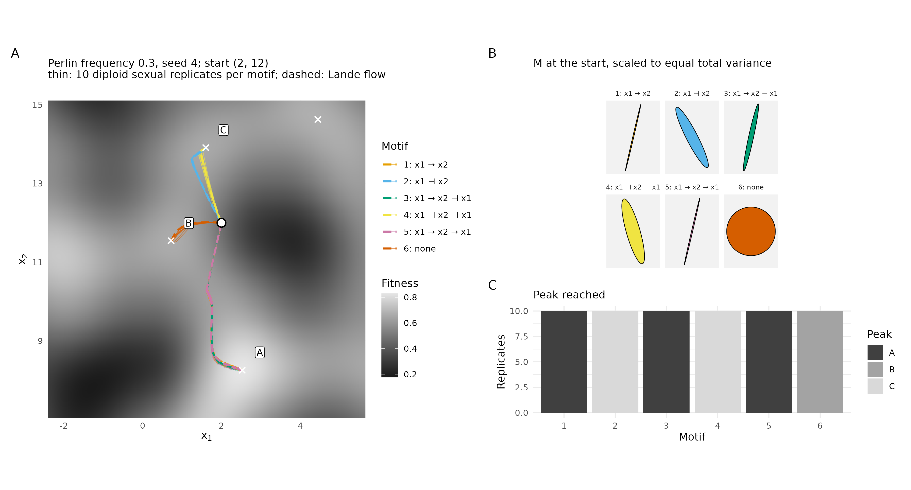
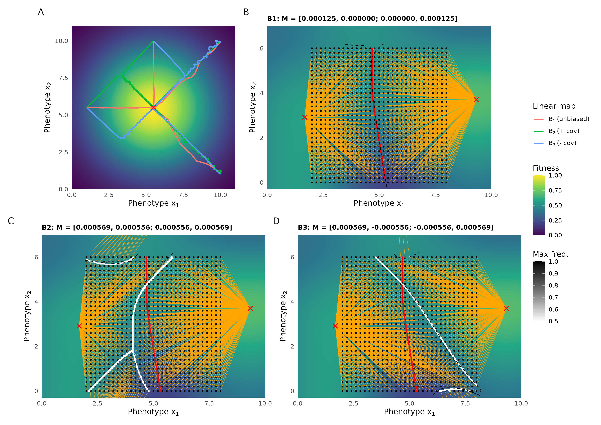
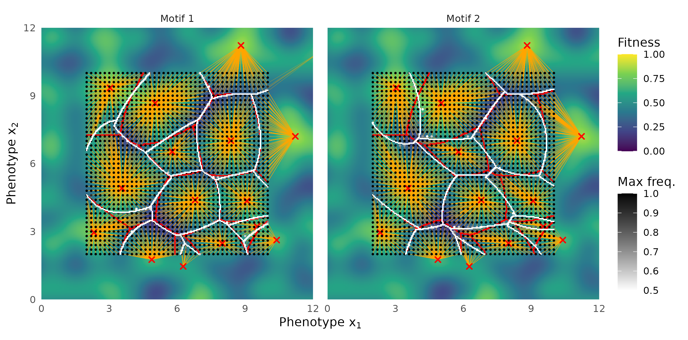
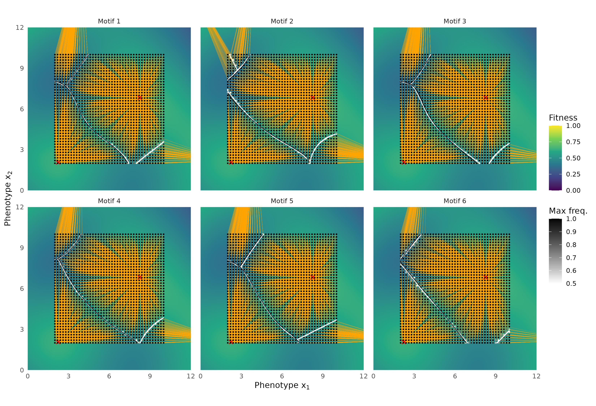
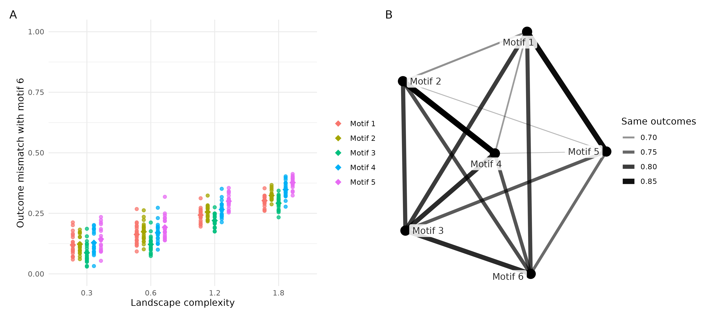

This article walks through the figures of Developmental Bias
Shapes Evolution on Complex Adaptive Landscapes (Netz, Melo &
Milocco) and shows how each is built with grnland. The
complete pure R scripts reproducing all manuscript figures are in the GRN_Landscapes
repository; the code below shows the essential calls.
All figures come from full diploid sexual simulations matching the manuscript:
library(grnland)
PAPER <- list(
N = 1000L, generations = 10000L, mu = 0.025, sigma = 0.05,
ploidy = 2L, reproduction = "sexual", sexes = TRUE,
selection = selection_relative_min(0.001)
)Simulations stop once the population mean phenotype stays within
Euclidean distance \(0.1\) of the same
local optimum for two consecutive 10-generation checkpoints (up to the
generation cap). A companion script (trial_selection.R)
verifies that standard Wright–Fisher proportional selection
(selection_proportional()) yields virtually identical
basins (98.2%–98.6% outcome agreement on the complex landscape) and
complexity/alignment curves.
The six motifs
Every figure compares the same six two-gene networks. Each gene has its own production rate \(\alpha_i\) as the evolving additive diploid locus (\(\alpha_i = \alpha_{i,1} + \alpha_{i,2}\)); the motifs differ only in how the two genes regulate each other (\(\gamma = 1\), \(\theta = 5\)).
| Motif | Regulation | paper_motif() |
|---|---|---|
| 1 | \(x_1 \to x_2\) | paper_motif(1) |
| 2 | \(x_1 \dashv x_2\) | paper_motif(2) |
| 3 | \(x_1 \to x_2\), \(x_2 \dashv x_1\) | paper_motif(3) |
| 4 | mutual repression | paper_motif(4) |
| 5 | mutual activation | paper_motif(5) |
| 6 | no regulation | paper_motif(6) |
Motifs reach different peaks
Script: motif_example.R. Before the paper
figures, a single-picture example of the main idea. All six motifs start
from the same phenotype (2, 12) on the same rugged
landscape (Perlin frequency 0.3, seed 4).
Because their M-matrices point in different directions (panel B), they
climb to three different peaks (panels A and C), and all 10 diploid
sexual replicates per motif reach the peak predicted by the
deterministic Lande flow \(\dot{\bar z} =
M\nabla W\).

Motifs with positive covariance between the traits (1, 3, 5) go to peak A, those with negative covariance (2, 4) to peak C, and the unregulated motif 6, with an isotropic M-matrix, to peak B.
land <- landscape_perlin(frequency = 0.3, seed = 4)
peaks <- find_peaks(land, 0, 20, res = 500)
runs <- lapply(1:6, function(k)
simulate_population(paper_motif(k), landscape_grid(land, 0, 20), start = c(2, 12),
N = 1000, generations = 10000, mu = 0.025, sigma = 0.05,
ploidy = 2, reproduction = "sexual", sexes = TRUE,
record_every = 20, seed = k))Fig 1: linear genotype-phenotype maps
Script: fig1_linear_maps.R. With a linear map
\(x = B\alpha\) the diploid M-matrix is
constant, \(M = 2\mu\sigma^2 BB^\top\).
Three equal-determinant maps (no covariance, positive, negative;
unbounded alleles) evolve on a single Gaussian peak (A) and on a
two-peak Perlin landscape (B–D; frequency 0.15, seed
96, offset (0, -2.5), \(31 \times 31\) grid, 10 replicates per
start). Outcomes are classified by an SVM (red border for \(\mathbf{B}_1\), white borders for \(\mathbf{B}_2, \mathbf{B}_3\); 10-fold CV
accuracies 99.6%, 99.0%, 99.1%) and compared with the deterministic
Lande separatrix (dashed black).
B <- list(B1 = diag(2),
B2 = matrix(c(5, 4, 4, 5) / 3, 2),
B3 = matrix(c(5, -4, -4, 5) / 3, 2))
models <- lapply(B, gp_linear)
land <- landscape_perlin(frequency = 0.15, seed = 96, offset = c(0, -2.5))
lande <- lande_separatrices(models$B2, land, lower = -2, upper = 12)
Fig 2: M-matrices across phenotype space
Script: fig2_m_matrices.R. Diploid M-matrices
(\(M = 2\mu\sigma^2 S S^\top\), \(\mu = 0.025, \sigma = 0.05\), 95%
confidence ellipses magnified 26×) and sensitivity vectors \(\partial x/\partial\alpha_i\) (blue for
\(\alpha_1\), red for \(\alpha_2\)) over a \(5 \times 5\) grid in \([2, 10]^2\), with pure-R motif topology
diagrams.
grid <- expand.grid(x1 = seq(2, 10, length.out = 5), x2 = seq(2, 10, length.out = 5))
Ms <- lapply(seq_len(nrow(grid)), function(i)
m_matrix(paper_motif(3), phenotype = unlist(grid[i, ]),
mu = 0.025, sigma = 0.05, ploidy = 2))
S <- sensitivity(paper_motif(3), genotype_at(paper_motif(3), c(4, 4)))
Fig 3, S1, S2: basins of attraction
Script: fig3_basins.R. Diploid sexual
populations start from a \(41 \times
41\) grid of phenotypes in \([2,
10]^2\) (10 replicates each; 201,720 runs total) on a simple
(frequency 0.1, seed 1234) and a complex
(frequency 0.5, seed 1245) Perlin landscape.
SVM basin borders (white; motif 6 reference in red; 10-fold CV
accuracies 98.3%–99.5% simple, 97.3%–97.9% complex) closely match the
Lande-equation separatrices (black in Figs. S1 and S2).
simple <- landscape_perlin(frequency = 0.1, seed = 1234)
land <- landscape_grid(simple, -5, 25, step = 0.02)
peaks <- find_peaks(simple, -5, 25, res = 800)
sim <- simulate_population(paper_motif(1), land, start = c(4, 6),
N = 1000, generations = 10000, mu = 0.025, sigma = 0.05,
ploidy = 2, reproduction = "sexual", sexes = TRUE, seed = 1)

Fig 4 and 5: landscape complexity
Script: fig4_fig5_complexity.R. Twenty random
Perlin landscapes per frequency (0.3, 0.6, 1.2, 1.8, offset
0.5), \(25 \times 25\)
starting grid in \([2, 10]^2\),
mutational SD \(\sigma = 0.2\) (plus a
\(\sigma = 0.05\) check across 10
landscapes and a \(21 \times 21\)
grid). Fig. 4A shows mean outcome mismatch against the unregulated motif
6 (rising from 0.09–0.14 at frequency 0.3 to 0.29–0.38 at frequency
1.8); Fig. 4B shows pairwise outcome agreement between all six
motifs.

Fig. 5 measures the angle between each population’s divergence vector (from its starting phenotype to the local optimum it reaches) and the dominant eigenvector \(M_{\max}\) of the M-matrix at that optimum. For the isotropic motif 6, the numerical eigenvector is arbitrary and angles stay uniform around 45°; for all five regulated motifs, angles decrease monotonically with landscape complexity (down to medians of 22.0°–35.7° at frequency 1.8).

Fig 6: trajectories of G and M
Script: fig6_trajectories.R (candidate found via
fig6_search.R). Motifs 1 and 5 start at
(1.0, 4.0)—where their local diploid M-matrices share
nearly identical eccentricity (0.99991 vs. 0.99986) and orientation
(73.34° vs. 73.40°)—on a twin-peak landscape built as the smooth maximum
(\(\beta = 100\)) of two shifted,
squared frequency-0.05 Perlin layers (seed
44). Across 10 diploid sexual replicates (\(N = 10{,}000\), 6,000 generations), 9/10
motif 1 replicates reach (8.45, 9.05) while 10/10 motif 5
replicates reach (7.61, 8.21). The additive genetic
covariance matrix \(\mathbf{G}\) is
estimated every 50 generations by mid-parent–offspring regression (5,000
random pairs independent of fitness).
layer <- function(offset) {
landscape_perlin(frequency = 0.05, seed = 44, offset = offset,
transform = function(z) ((z + 1) / 2)^2)
}
twin <- landscape_smoothmax(layer(c(0, 1)), layer(c(-1, 0)), beta = 100)
Fig S3: Perlin landscapes
Script: figS3_perlin.R. Perlin adaptive
landscapes at five increasing frequencies
(0.1, 0.3, 0.6, 1.2, 1.8; seed 1234, offset
0.5) and their spatial autocorrelation profiles.

Running the scripts
From the GRN_Landscapes repository root:
QUICK=1 OPENBLAS_NUM_THREADS=1 Rscript fig3_basins.R # quick pipeline check
OPENBLAS_NUM_THREADS=1 OMP_NUM_THREADS=1 MKL_NUM_THREADS=1 Rscript run_all.RResults are cached in output/, so re-running a script
only redraws its figure; set REDO=1 to recompute,
SIGMA=0.05 for the low-mutation Fig. 4–5 check, or
SELECTION=proportional for proportional Wright–Fisher
selection.